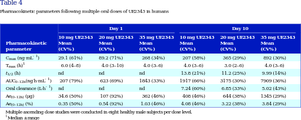

<?xml version="1.0" encoding="UTF-8"?>
<table title="table4" id="table4" class="tabcontent" xmlns="http://www.w3.org/1999/xhtml">
 <tr>
  <td>
   
   <p>corpus-oa-validation/10.1111_bph.13699/tables/table4/table.svg.png</p>
  </td>
  <td>
   <table class="table">
    <caption/>
    <tr>
     <th class="cell">C _{max} T _{max} t _{1/2} (h) AUC _{0–12h} Oral clearance (L·h ^{-1} ) Ae _{(0–12h)} (μg) Ae _{(0–12h)} (%) </th>
     <th class="cell">(ng·mL ^{-1} ) (h) ^{1} (ng h·mL^{.} ^{-1} ) </th>
     <th class="cell">29.1 (61%) 6.0 (4–8) nd 207 (79%) nd 34.6 (50%) 0.35 (50%) </th>
     <th class="cell">89.2 (71%) 4.0 (3–10) nd 623 (69%) nd 107 (92%) 0.54 (92%) </th>
     <th class="cell">268 (34%) 4.0 (3–6) nd 1843 (33%) nd 362 (46%) 1.03 (46%) </th>
     <th class="cell">207 (58%) 4.0 (3–6) 13.8 (21%) 1917 (66%) 7.24 (60%) 408 (46%) 4.08 (46%) </th>
     <th class="cell">365 (29%) 3.0 (2–6) 11.2 (25%) 3175 (30%) 6.85 (33%) 644 (38%) 3.22 (38%) </th>
     <th class="cell">892 (30%) 4.0 (3–6) 9.99 (14%) 7909 (36%) 5.02 (43%) 1345 (29%) 3.84 (29%) </th>
    </tr>
    <tr>
     <td class="cell">Multiple ascending dose studies were conducted in eight healthy male subjects per dose level.</td>
    </tr>
    <tr>
     <td class="cell">^{1 Median ± range}</td>
    </tr>
   </table>
   <p>corpus-oa-validation/10.1111_bph.13699/tables/table4/table.svg.html</p>
  </td>
 </tr>
</table>
